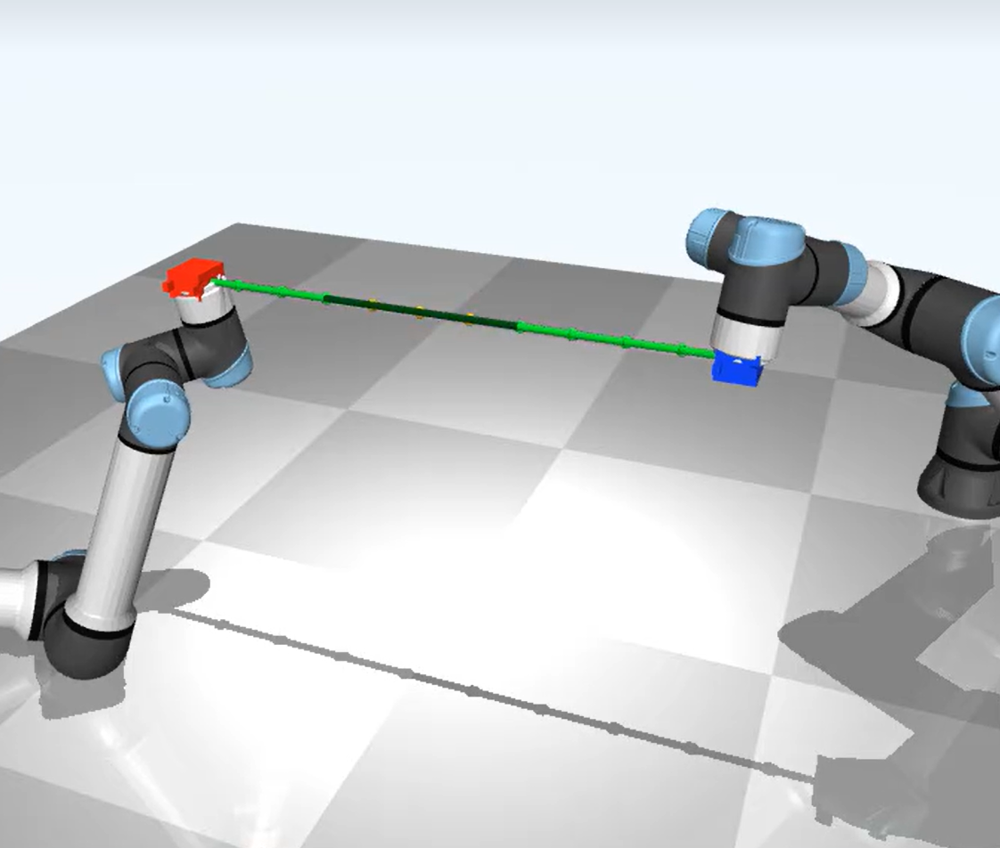
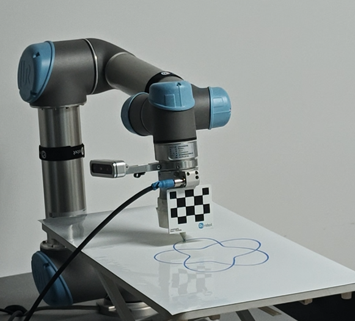
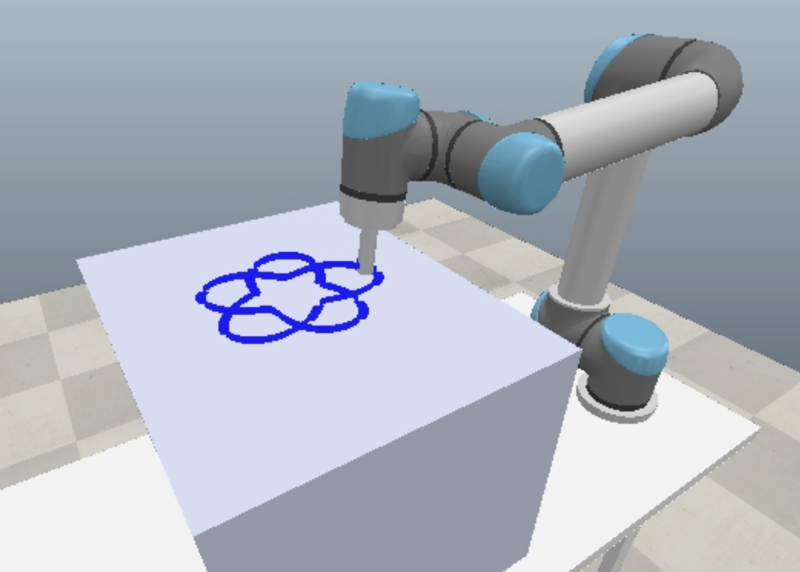
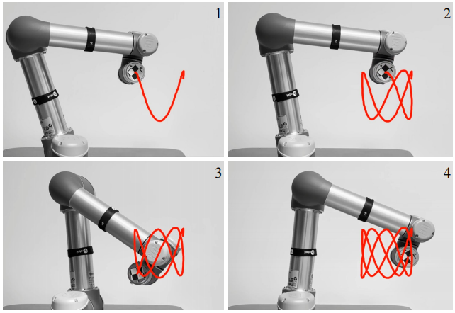
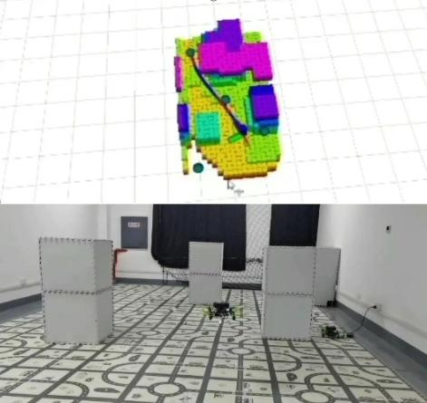

2024.09 — 2027.06（预计）
湖南大学 · 控制科学与工程
硕士（推荐免试） · GPA 3.68 / 4.0 · Ranking 6 / 44
核心课程：最优化、机器人控制、矩阵论、多个体学习与集群智能。
ACADEMIC PORTFOLIO
湖南大学 · 控制科学与工程硕士研究生
研究方向：机器人运动规划与控制、机器人力控、双机械臂协同控制。 关注模型未知条件下的数据驱动控制、复杂接触任务与柔性对象操作。

ABOUT
我目前在湖南大学机器人视觉感知与控制技术国家工程实验室学习，硕士阶段主攻机器人运动规划与控制、机器人力控及双机械臂协同控制。 研究工作覆盖数据驱动建模、在线雅可比估计、神经网络控制、轨迹优化和柔性线缆操作，并在 MATLAB、MuJoCo、CoppeliaSim、Gazebo 与真实机器人平台上完成验证。
2024.09 — 2027.06（预计）
硕士（推荐免试） · GPA 3.68 / 4.0 · Ranking 6 / 44
核心课程：最优化、机器人控制、矩阵论、多个体学习与集群智能。
2020.09 — 2024.06
工学学士 · GPA 3.75 / 4.0 · Ranking 5 / 58
核心课程：机器人驱动与控制、机器人感知与学习、神经网络与深度学习。
PORTFOLIO
单机械臂 · 多机械臂 · 无人机 · 无人车 · 嵌入式
可补充项目名称、芯片型号、主要功能、个人工作与演示图片
多机械臂 / 01 · 2026.03 — 至今
国家科技重大专项子课题核心成员，面向复杂可变形对象开展双臂协同建模、形状控制与技能复用研究。


柔性线缆具有高维、强非线性和形状状态难以直接建模等特点，需要在有限观测下实现稳定的形状预测与双臂协同操作。
单机械臂 / 01 · 2025.07 — 至今
湖南省教育厅优秀青年项目核心成员，研究模型未知条件下接触轨迹跟踪与交互力稳定控制。


针对接触任务中机械臂模型不确定、交互力响应滞后及接触稳定性不足的问题，研究数据驱动的运动—力协同控制方法。
单机械臂 / 02 · 2023.03 — 2025.06
国家自然科学基金青年项目核心成员，面向运动学模型不确定、传感噪声和外部扰动研究高精度轨迹跟踪。

无人机 / 01 · 2023.03 — 2023.10
全国大学生机器人大赛运控组核心成员，完成轨迹优化、三维自主避障和视觉定位控制算法开发。
设计 Minimum-snap 轨迹优化算法，并基于 A* 算法实现三维环境中的自主避障。
设计串级 PD 控制器并完成解耦调参，实现规划轨迹的稳定跟踪。
基于视觉 SLAM 优化非线性位姿估计，并解决异构数学库的矩阵存储冲突。
无人车 / 01 · 2023.11 — 2024.01
好停车网络科技有限公司机器人系统实习生，完成感知—定位—控制系统搭建和天津机场实车验证。

PUBLICATIONS
Zhu Siying, Yang Min. Distance-Driven Obstacle Avoidance for Redundant Manipulators with Fuzzy-Adaptive Task Prioritization.
2026 Chinese Automation Congress (CAC 2026) · 已录用Yang Min, Zhu Siying, Guo Yuxin, Chen Kaixu, Zhang Hui, Xiao Wei. A novel model-free DZNN-QN algorithm for redundant manipulator control.
IEEE Transactions on Industrial Electronics, 2025, 72(12): 13572–13583 · 第二作者Yang Min, Zhu Siying, Zhang Hui. Inverse-free and data-driven motion tracking control for redundant robot with fuzzy recurrent neural network.
IEEE/RSJ International Conference on Intelligent Robots and Systems (IROS), 2025 · 第二作者Yang Min, Zhu Siying, Zhang Hui, Wang Yaonan. Intelligent computational algorithms based on neural networks: a survey.
Computational Intelligence, 2026, 42(2): e70193 · 第二作者Zhu Siying, Yang Min. A new high-precision DZNN model for motion control of redundant manipulators with obstacle avoidance.
2023 7th Asian Conference on Artificial Intelligence Technology (ACAIT), pp. 59–65一种冗余机械臂运动控制方法、计算机设备和存储介质。
中国发明专利 ZL 2024 1 1825736.2 · 第二发明人 · 2025-03-21 授权TECHNOLOGY
机器人运动学 / 动力学建模 · 自适应控制 · 最优控制 · 模糊控制 · 运动—力协同控制
数据驱动建模 · 神经网络 · 数值优化 · 滤波算法 · 轨迹规划 · 避障优化
MATLAB · Python · C++ · PyTorch · MuJoCo · CoppeliaSim · Gazebo
ROS1 / ROS2 · UR5 / UR5e · Kinova · TCP/IP 通信 · 无人车实物控制
HONORS
奖学金：研究生国家奖学金、研究生比亚迪奖学金、研究生一等学业奖学金、本科生国科公益基金会奖助学金。
竞赛：全国大学生机器人大赛 ROBOCUP 国家级二等奖、第八届“互联网+”大学生创新创业大赛省级二等奖。
荣誉：校级优秀研究生、本科毕业实习优秀实习生。
CONTACT
欢迎就机器人控制、柔性对象操作与科研合作进行交流。